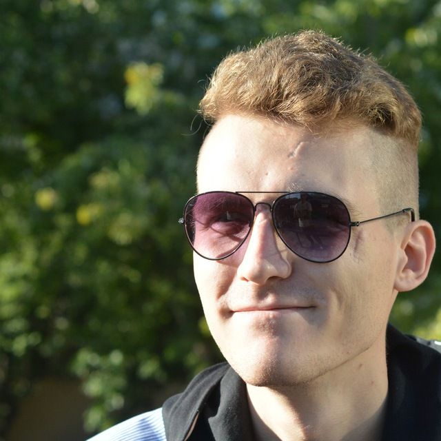

Dmytro Yanov
Project Manager
- dmytro.yanov@gmail.com
- +4746583082
- Fålesloråsen 57, 1407 Vinterbro

Summary
Ambitious Project Manager with 3+ years of experience in IT and a deep technical background, which resulted in significant improvements to department workflows. Great communication skills and fluent English allowed for seamless and productive cooperation with international Product owners. Passionate strategy games player and min-maxer. I had to leave Ukraine due to conflict and now seek to make it beneficial to myself, my country, and the people around me by pursuing my dream.
Experience
Project Manager, Ephyros
2021/05 - 2023/05
- Managed development of e-commerce projects (Shopify and Bigcommerce), 5-8 projects at the same time
- Varied complexity, from cosmetic fixes to creating a store from the ground up
- Continuous communication with store owners and other dev teams
Selected Accomplishments
- Multiple optimizations to small projects workflow, cutting overhead time by 50%
- 4 projects upgraded from one-task to a retainer model and continuous support
Team Lead/Project Manager, Squad (pr. Ring Ukraine)
2019/01 - 2021/05
- Started as a data operator and got promoted in 4 months
- Provided real-time data processing (12h shifts) to generate datasets for neural networks for visual and semantic processing
- Managed coordination between 2 R&D teams (Ukraine and USA based) and the data processing team, and cooperated with the USA based Product owner
- Collaborated in designing realistic project requirements
- Provided performance analysis and coaching services to a foreign department
Selected Accomplishments
- Developed KPI models for the department, provided logic and operating documents based on Kibana data analysis
- Initiated and managed our main web-based work tool update with a team of 3 developers and 1 designer, provided both UI and logic update propositions
- Initiated and participated in semantic neural network structure update, its processing volume increased from ~50% to ~85% of the whole content flow
- Updated a variety of department workflows, and achieved an average employee speed increase of 80% and a mistakes rate decrease from 7% to 3%
Education
Master's Degree in Artificial Intelligence Systems
Kharkiv National University of Radio Electronics, Ukraine
2013 - 2014
European Entrepreneurship Program
ITIN, France
2011 - 2012
Bachelor’s Degree in Computer Science
Kharkiv National University of Radio Electronics, Ukraine
2009 - 2013
Skills
- Project Management - proficiency with the Agile SDLC model
- E-Commerce - Shopify, BigCommerce
- Task Management tools - Jira, Trello, Basecamp
- Office tools - significant experience with Google Sheets and Excel, scripting
- Technical skills - Deep understanding of Applied Mathematics
- AI technologies - Intelligent Data Mining techniques, Database and Knowledge Base, Python, SQL
- Programming - Desktop and web development - C++, C#, Azure, HTML, CSS, JavaScript
- 2D and 3D design - hobby-level experience with Blender, ZBrush, Photoshop, Illustrator, CorelDraw
Languages
- Ukrainian - native
- English - C1
- German - A2
- Russian - native :(
Character
- Believe that sincerity is a fundamental human value
- Supportive and attentive to team members
- Competitive, as long as it aligns with the overall goal
- Experienced in working under pressure and possessing high tolerance
- Highly communicative with excellent presentation skills
- Eager for feedback, able to abandon personal ideas if proven wrong
- Perceptive to others' successes and failures